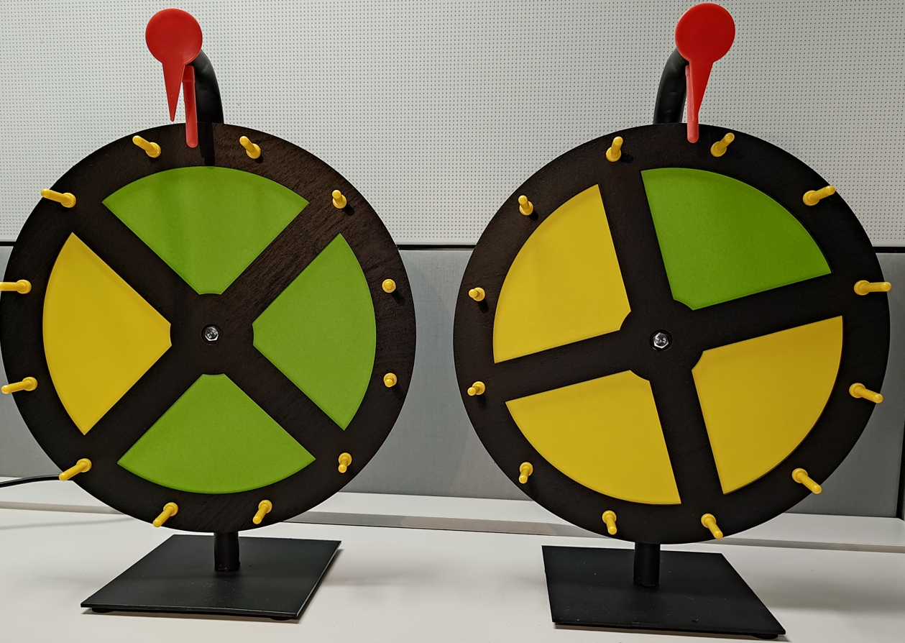
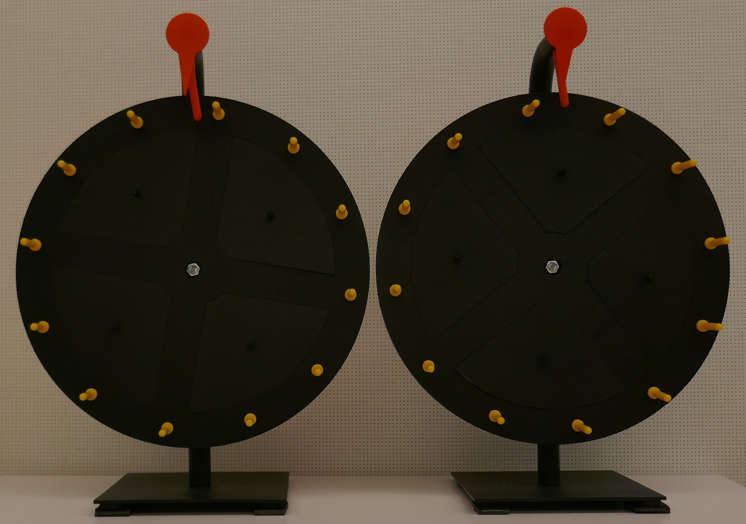
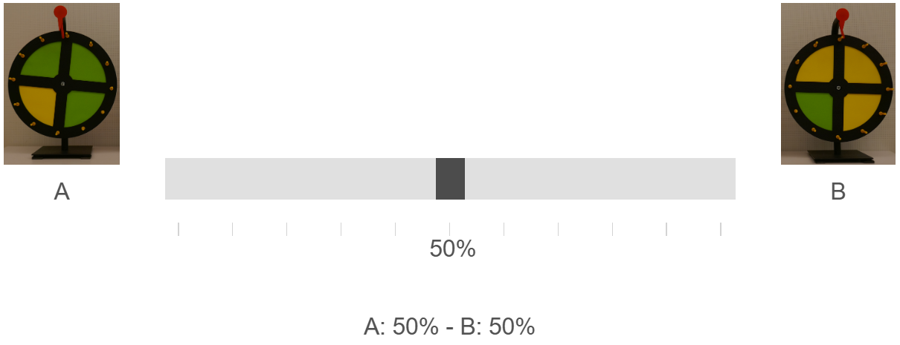

Instructions for the experiment
In short
- In each of six rounds, you use a slider to estimate how likely it is that the selected wheel is Wheel A or Wheel B: before the first spin and after each of eight spins.
- You receive $9 for taking part and can win a bonus of $10.
- Always set the slider to the probability you believe is correct. This gives you the best chance of winning the bonus for your estimate.
Introduction to the experiment:
In today's experiment we use two different "wheels of fortune". Each wheel is divided evenly into four fields. The first wheel, Wheel A (the "green wheel"), is three quarters green and one quarter yellow in color. The second wheel, Wheel B (the "yellow wheel"), is three quarters yellow and one quarter green in color. This setup will be very important for your decisions during the experiment.

At the start of the experiment, the colored fields of both wheels are covered, see the picture below.

The experiment consists of 6 rounds. At the start of each round, one of the two wheels of fortune is selected at random to be used in that round, while the other is set aside. In each round, each wheel has the same probability of being selected (50% - 50%). The selected wheel is referred to as the "selected wheel of fortune". Because the fields are covered when the wheel is selected, you cannot see whether Wheel A or B was selected.
Procedure:
In each of the 6 rounds, the selected wheel is spun 8 times. After each spin, the field that the red pointer at the top of the wheel points to is revealed. This step-by-step revealing will help you gather clues about the composition of the selected wheel and better understand the likely color distribution.
Introduction to the experiment (continued):
Since we never reveal all four fields at once, but always only one field, you cannot be completely sure which wheel of fortune you are playing with when you see a yellow or green field. It may of course happen that the pointer points to the same field several times after spinning. Whether that is the case, we do not know. It is random which field the pointer stops on.
After each spin, you tell us how likely you think it is that the selected wheel is Wheel A (green wheel) or Wheel B (yellow wheel). To do this, you use this slider, which shows the probability of the two wheels.

On the screen you see two colored wheels with labels: Wheel A on the left side and Wheel B on the right side, with a horizontal slider in between.
How to use the slider:
- Central position: Above, the slider is in the middle and indicates that the probability that either Wheel A or Wheel B was selected is equally high (50% each). This neutral position means that you are completely unsure which wheel was selected.
- Adjusting the slider:
- To the right: Move the slider towards Wheel B if you consider it more likely. The more strongly you believe it is Wheel B, the further you should move the slider to the right. Any position to the right of the middle means that you believe the selected wheel is more likely to be Wheel B than Wheel A. If you move the slider all the way to the right, you are 100% sure that Wheel B was selected and the probability display reads "A: 0% - B: 100%".
- To the left: If, on the other hand, you believe that Wheel A is more likely to be the selected wheel of fortune, move the slider to the left. The more strongly you believe it is Wheel A, the further you should move it to the left. Any position to the left of the middle means that you believe the selected wheel is more likely to be Wheel A than Wheel B. If you move the slider all the way to the left, you are 100% sure that Wheel A was selected, and the probability display reads "A: 100% - B: 0%".
Reading the probabilities:
- The probabilities for Wheel A and B adjust dynamically as you move the slider. The closer the slider is to a wheel, the higher the probability shown for that wheel. The sum is always 100%, so one of the two wheels is definitely in play.
Overview
We are now starting an experiment with six rounds. In each round, you will use the slider nine times to estimate probabilities: once before the first spin and then after each of the eight spins. Each spin is shown in a video.
Payment
You can receive the following payments:
- Payment for taking part: You receive a base payment of $9 for taking part in the experiment.
- Bonus for your probability estimate: At the end of the experiment, one of the six rounds is drawn at random. In this round, one of your nine estimates is chosen at random. With this estimate, you take part in a lottery for $10. The closer your estimate is to the wheel that is the selected wheel of that round, the more winning tickets you receive. Your chance of winning is highest if you always set the slider to the probability that you yourself believe is correct.
- Random bonus: At the end of the experiment, there is also a lottery for a random bonus of $10, which you win with a probability of 50%.
Important: At the end of the experiment, a coin flip decides whether you are paid either the bonus for your probability estimate or the random bonus. You never receive both.
The payment rule
Your estimate and the selected wheel determine your chance of winning $10: the more probability your estimate puts on the wheel that turns out to be the selected wheel, the higher your chance of winning. If you do not win, you receive $0.
Example #1: Suppose your estimate is A: 70% - B: 30%
| Selected wheel | Chance of winning $10 |
|---|---|
| Wheel A | 91% |
| Wheel B | 51% |
The 70% in this example is just an example, not a suggested estimate.
Example #2: Suppose your estimate is A: 0% - B: 100%
You are 100% certain that the selected wheel is Wheel B (yellow wheel).
| Selected wheel | Chance of winning $10 |
|---|---|
| Wheel A | 0% |
| Wheel B | 100% |
Example #3: Suppose your estimate is A: 100% - B: 0%
You are 100% certain that the selected wheel is Wheel A (green wheel).
| Selected wheel | Chance of winning $10 |
|---|---|
| Wheel A | 100% |
| Wheel B | 0% |
Setting the slider to your own best estimate gives you the greatest chance of winning, according to your estimate. A higher or lower estimate lowers that chance.
See the exact rule and more examples
Think of your chance of winning as winning tickets out of 100: each winning ticket represents a 1% chance of winning.
The computer calculates the distance between your estimate for Wheel A and 100 if Wheel A is selected, or 0 if Wheel B is selected. The distance is measured in percentage points.
Winning tickets = 100 − (distance × distance) ÷ 100.
In Example #1, the distance is 30 if Wheel A is selected: 100 − (30 × 30) ÷ 100 = 91 winning tickets. If Wheel B is selected, the distance is 70: 100 − (70 × 70) ÷ 100 = 51 winning tickets.
| Your estimate for Wheel A | Winning tickets out of 100 if Wheel A is selected | Winning tickets out of 100 if Wheel B is selected |
|---|---|---|
| 0% | 0 (0%) | 100 (100%) |
| 20% | 36 (36%) | 96 (96%) |
| 50% | 75 (75%) | 75 (75%) |
| 80% | 96 (96%) | 36 (36%) |
| 100% | 100 (100%) | 0 (0%) |